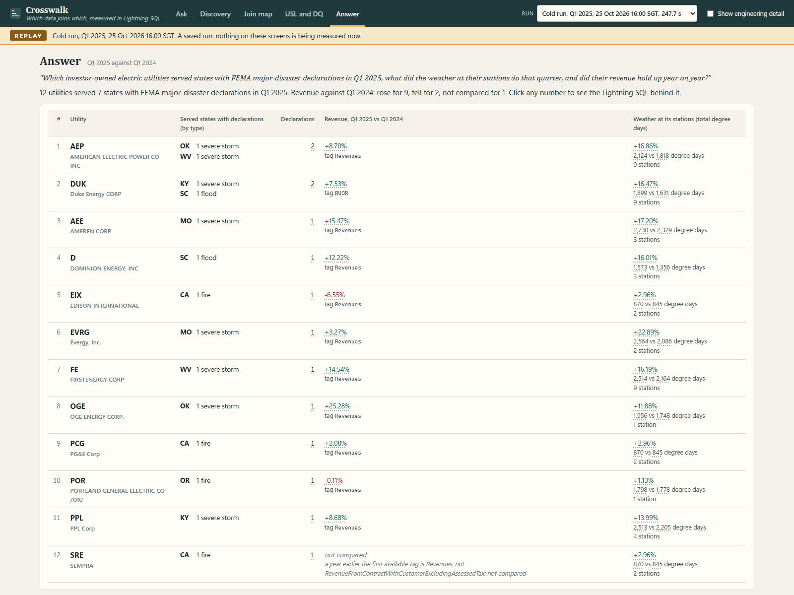
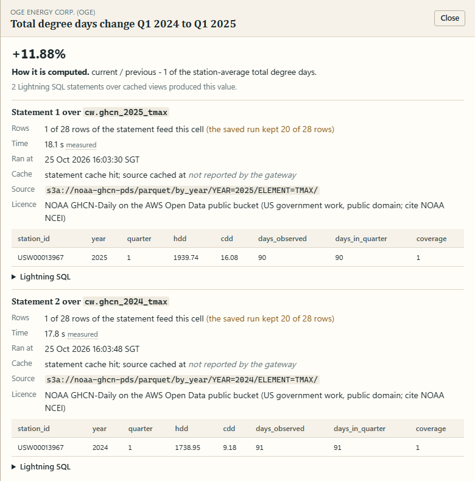
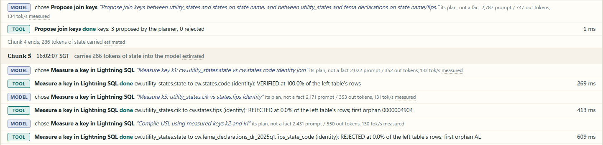
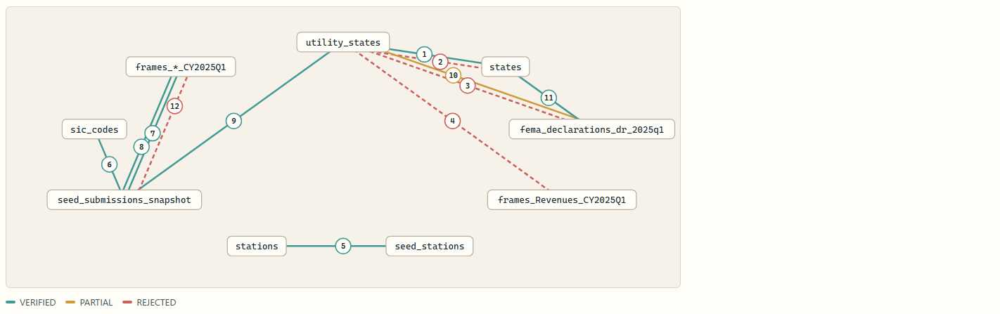
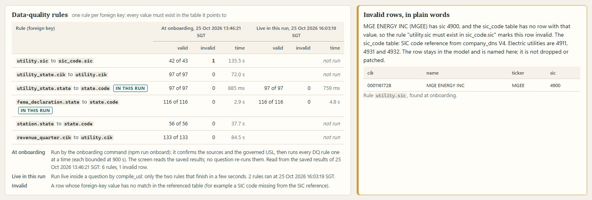
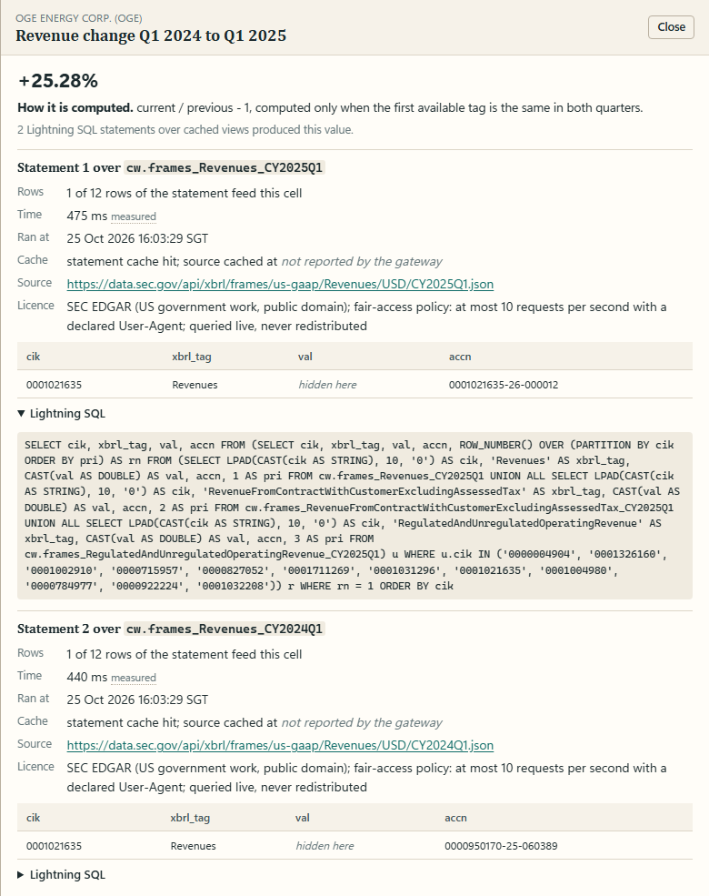
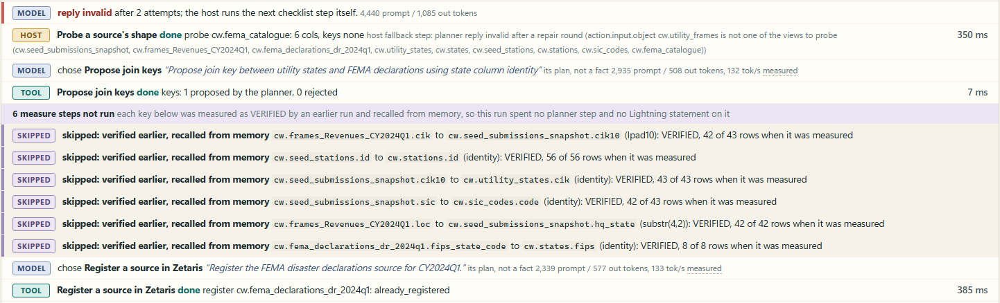
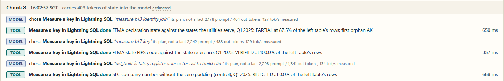

0 of 43 as published; 42 of 43 measured. SEC writes the same company number two ways. Crosswalk finds which public datasets join which, measures each join key in Lightning SQL with its orphans, answers each column only after its key passes, leaves a governed semantic layer, and cites the SQL behind every number.

Q1 2025: FEMA declared major disasters in 8 states, and 12 investor-owned utilities served 7 of them. Against Q1 2024 their revenue rose for 9, fell for 2 and was not comparable for 1; degree days rose at the stations of all 12.
An analyst at a state utility commission who is handed a cross-agency question and has no data engineer on call.
Which investor-owned electric utilities served states with FEMA major-disaster declarations in Q1 2025, what did the weather at their stations do that quarter, and did their revenue hold up year on year?
Disaster Declarations Summaries v2: one row per declaration and designated county, with the state as two letters and as a FIPS code. Major-disaster (DR) declarations dated in the quarter.
Frames: one revenue fact per filer and quarter under a tag, company number unpadded, location as US-XX. Submissions: the filer profile with the 10-digit company number, SIC code and business-address state.
Daily TMAX and TMIN per station (parquet by year on the AWS Open Data bucket) and the station inventory ghcnd-stations.txt, fixed-width text with the state inside each line.
The company_dns SIC list (1,005 codes) and a state reference (50 states and DC with FIPS codes). Seeds: 43 utilities with the states they serve and 56 first-order weather stations, curated from public filings and labelled curated.
FEMA declared major disasters in 8 states in Q1 2025; 12 of the 43 seed utilities serve 7 of them (no seed utility serves Alaska). Revenue against Q1 2024 rose for 9, fell for EIX (−6.55%) and POR (−0.11%), and is not compared for SRE, whose first available tag differs between the two quarters.

| Proposer | Made | VERIFIED | PARTIAL | REJECTED | Unmeasurable |
|---|---|---|---|---|---|
| Nemotron 3 Nano 4B, choosing from a menu of probed columns | 11 | 3 | 1 | 7 | 0 |
| Name-and-statistics baseline (no model) | 30 | 25 | 0 | 5 | 0 |
The baseline wins. The model is kept as a second proposer whose every proposal is measured in Lightning SQL before anything uses it. It found no key the baseline missed: each key it got VERIFIED was also measured from a baseline proposal in the same run.
Then answer (fixed SQL templates), not_tested and finalize (the note, checked word by word against the join map and the answer). The checklist (sources found, shapes probed, keys proposed, keys measured, sources registered, USL built, DQ run, answered, not-tested listed, note written) fixes the order; the model chooses among the steps it allows and proposes keys. It never writes SQL or DDL and never computes a number. A reply that is invalid twice hands the step to the host.

| Key (left → right) | Transform | Rows matched | Distinct values | Verdict | Orphans |
|---|---|---|---|---|---|
| (a) submissions company number → frames company number | lpad10 | 42 / 43 (97.7%) | 42 / 43 | VERIFIED | IDACORP (no Q1 2025 fact) |
| (a) control: the same, without padding | identity | 0 / 43 (0.0%) | 0 / 43 | REJECTED | all 43 |
| (b) frames location → business-address state | substr(4,2) | 42 / 42 (100%) | 42 / 42 | VERIFIED | none |
| (c) FEMA state → states the utilities serve | identity | 7 / 8 (87.5%) | 7 / 8 | PARTIAL | AK |
| (c) FEMA FIPS state code → state reference | identity | 8 / 8 (100%) | 8 / 8 | VERIFIED | none |
| (d) seed station id → GHCN station inventory | identity | 56 / 56 (100%) | 56 / 56 | VERIFIED | none |
| (e) utility SIC → SIC reference | identity | 42 / 43 (97.7%) | 3 / 4 (75.0%) | VERIFIED | MGE Energy (4900) |
| (c) in the warm run, Q1 2024: FEMA state → served states | identity | 8 / 11 (72.7%) | 8 / 11 | REJECTED | AK, ME, VT |

Two lists of US state codes overlap, so hq_state → station state (28 of 28) and served state → station state (43 of 43) also measure VERIFIED. Nobody would join on them; the join map shows them beside the governed keys without saying so.
npm run ask, npm run onboardcrosswalks_to, valid from the measurement), utilities, states, declarationscw only; 0 of 399 statements over 20 s, slowest 18.1 s (the weather statement). Onboarding path (npm run onboard): register, cache, compile the USL, run every DQ rule bounded at 900 s.| Lightning database | Source, as registered | Counted against the source (25 Oct 2026) |
|---|---|---|
| CW_FEMA (REST) | Declarations, DR filter percent-encoded; the OpenFEMA dataset catalogue | 116 rows, 10 declarations, 8 states (Q1 2025); 72 / 14 / 11 (Q1 2024) |
| CW_SEC (REST) | Frames for 3 revenue tags × 2 quarters; 43 filer profiles | 20 to 2,654 facts per frame, one row per filer |
| CW_DNS (REST) | company_dns SIC list | 1,005 codes |
| CW_GHCN (filestore) | Station inventory (CSV, | delimiter, parsed by SUBSTR); parquet TMAX and TMIN, 2024 and 2025 | 133,039 stations; about 20,800 rows per year and element for 57 stations |

Governed USL. crosswalk_usl: 7 tables with primary keys and 6 foreign keys, each a key measured before it was declared; activated from the cached views, because a raw REST table re-fetches its endpoint on every read. Each question runs 2 DQ rules live; the other 4 are read from the onboarding run of 25 Oct 13:46 SGT, where MGE Energy is the one invalid row.
Registration at run time. register_source creates, caches and counts a catalogue source under a signed contract. A Day-1 warm run registered three Q1 2023 revenue frames live, about 1 s each; the warm run recorded for the video registered FEMA Q1 2023 in 1.6 s and three Q1 2022 frames. In the Day-2 evaluation runs every call answered already registered.

Every key measured VERIFIED is kept as a key_verified memory with its Zetaris provenance (SQL, object, time). The warm question (Q1 2024) recalled 6 and spent no planner step and no statement on them: 194.1 s, against 247.7 to 285.8 s for the cold runs. Seeded at boot with 46 memories: 23 from the Zetaris getting-started manifest, 10 from its known-to-fail notes, 12 source findings, 1 from the catalogue's known-to-fail list.
Cold run 16:00 SGT: 10 chunks of at most 12. The state carried between chunks was 273 to 451 tokens (estimated) against an 800-token cap. The first prompt of each chunk, as Ollama counted it, stayed between 1,782 and 2,236 tokens, while a prompt carrying the whole history would have reached 9,308 by chunk 10 (estimated).
After the cold run: 444 events; 12 datasets, 71 columns and 25 crosswalks_to edges, one per measured key, carrying transform, rate and verdict, valid from the time Lightning measured it. Asked about OGE, it answers: DR-4862 (severe storms) declared in OK, valid from 2025-03-18; OGE serves OK (10-K seed, curated).

GET /api/world/1021635. Engines vendored unchanged.8 / 12| Cold question, 3 runs each (26 Oct) | Wall, median (min to max) | Output tokens, median | Median tok/s | Host fallback steps per run | Model keys VERIFIED / made | VRAM | Answer |
|---|---|---|---|---|---|---|---|
| Think on, Q4_K_M (shipped) | 274.2 s (268.4–317.9) | 22,666 | 136.5 | 4, 4, 8 | 3 / 6 | 2,881 MiB | reference, 3 of 3 |
| Think off, Q4_K_M | 216.0 s (211.7–219.1) | 14,733 | 136.3 | 8, 7, 7 | 3 / 6 | 2,881 MiB | identical, 3 of 3 |
| Think on, Q8_0 | 347.8 s (297.5–400.0) | 22,140 | 100.9 | 6, 6, 6 | 1 / 5 | 4,066 MiB | identical, 3 of 3 |
| No model (host takes every step) | 87.5 s (87.1–90.2) | 0 | n/a | 25, 25, 25 | n/a | n/a | identical, 3 of 3 |
nemotron-3-nano:4b through Ollama: 4.0B parameters, Q4_K_M, context 8,192, 2,881 MiB of VRAM (Q8_0: 4,066 MiB). JSON-schema replies, checked by the host; an empty reply cut by length is repaired once with thinking off. 0 cloud model calls.
Without the model the same answer and governed keys arrive in 32% of the think-on median. Every think-off run beat every think-on run with the same 3 of 6 model keys, so the shipped setting costs about a minute here; Q8_0 is slower and found fewer. The model reloaded 2 to 6 times per run; the likely cause, a host-RAM guard, is not verified.

6 cold runs of the demo question on 25 Oct (think on, off, no model): the same 12-row answer in every field, and the same numbers and orphans for the 7 governed join-map keys in every pair. 12 more on 26 Oct (adding Q8_0), all through the answer gate: the same 12 rows in every field. The Day-2 report is regenerated from the saved runs by one command.
| Check | Outside | Agent / Zetaris | Equal |
|---|---|---|---|
| OpenFEMA API, Q1 2025: rows / declarations / states | 116 / 10 / 8 | 116 / 10 / 8 | yes |
| OpenFEMA API, Q1 2024 | 72 / 14 / 11 | 72 / 14 / 11 | yes |
| EVRG FY2024 10-K: states served | KS, MO | KS, MO | yes |
| PPL FY2024 10-K: states served | KY, PA, RI, VA | KY, PA, RI | no (VA has no declaration in either quarter) |
| Statements | Decisions asked | Wall | Also produces | |
|---|---|---|---|---|
| By hand (pre-written SQL) | 27 | 24 | 179.5 s | the five keys and their orphans |
| Agent, cold, median | 60 | 0 | 275.8 s | keys, cited answer, USL check, live DQ, checked note |
| Agent, warm (Q1 2024) | 46 | 0 | 194.1 s | the same, verified keys recalled |
| Agent, cold, no model (median of 3) | 56 | 0 | 87.5 s | same answer and keys, template note |
An expert who already knows the five keys is faster by hand. The agent asks for none of the 24 decisions and adds what the hand session does not produce: every key measured with its orphans, the governed USL and its DQ, the cited answer, and memory for the next question. A person's time to write and read that SQL is not measured.
11 proposals and 3 VERIFIED against the baseline's 30 and 25; every key it verified was also among the baseline's proposals. Some choices are pairs nobody would try (company number against FIPS code: 0 of 43); Lightning SQL rejects them, at the cost of a planner step and a statement each.
A median 87.5 s with no model against 274.2 s with it (three runs each), same answer and governed keys: on this question the planner and the note add time, not keys. Think off beat think on in every run; Q8_0 was slower and found fewer keys.
125 of 157 planner replies valid; the host took 2 to 8 checklist steps itself per run. The model's note was replaced by the 250-word template in 3 of the 6 runs with the model on Day 2, and in 8 of 10 on 26 Oct; one early draft said revenue "held up" while EIX and POR fell, and the verifier rule was fixed afterwards.
Two state-code lists overlap and measure VERIFIED (28 of 28, 43 of 43) though nobody would join on them.
PPL's 10-K also names Virginia, which the seed leaves out (no answer changes). Probing the 133,039-row station inventory costs about 27 s per cold run; each weather statement 18 s.
git ls-files engines | xargs wc -l).gateway/jdbc.py (279 lines) adapted from the Zetaris getting-started repository.git grep -l "Adapted from Weather-or-Not" over agent, gateway, ui, scripts, zetaris, seeds).Developed in Cursor; details in docs/how-cursor-was-used.md. Seven pieces (C1-C7) were written by Cursor Agent from task files in docs/cursor-tasks, reviewed and committed as "(Cursor Agent)".
Code: github.com/GitHubMoreLikeGitGud/crosswalk (Apache-2.0). Model: NVIDIA Nemotron under the NVIDIA Open Model License.